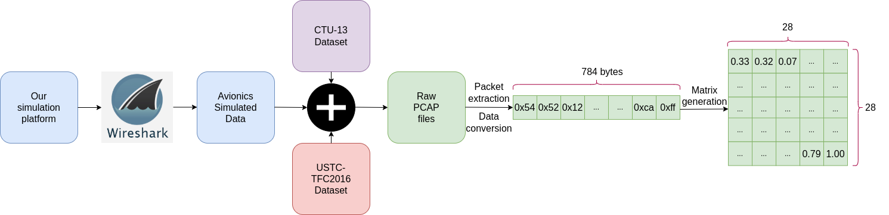
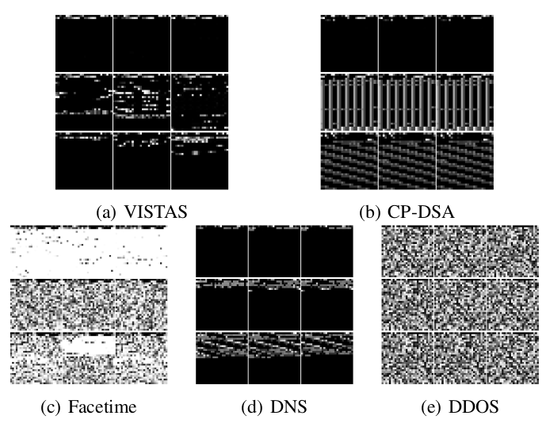
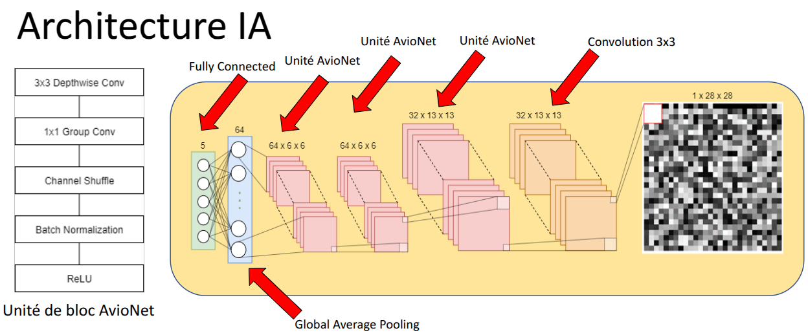
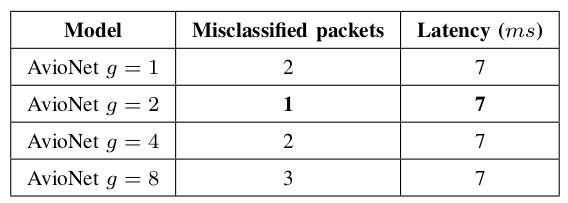

AvioNet: A lightweight, computation-efficient neural network for virtual avionics network protocol recognition
Overview
Aerospace systems have complex internal interactions which allow a consistent behavior for the overall system. These are aided by communication protocols such as ARINC 629, AFDX, etc. These systems are too expensive and too critical to allow real experimentation, thus requiring extensive use of simulation. Thus an aircraft simulation test bench involves various simulation components with their own communication protocols, complicating its development process. One way to solve this issue consists of recognizing each communication protocol, decoding and encoding it in another protocol within a shared simulation environment. As part of a project to develop an interoperable simulator, we aim to build such a system that can recognize and decode avionics simulated communication protocols. In this work, we present AvioNet (Kerkech et al. 2022), a lightweight, computation-efficient neural network for virtual avionics network protocol recognition with accuracy and latency levels as required by aerospace systems. This method converts each packet into a common gray image, and then uses the depthwise separable convolution, pointwise group convolution and channel shuffle operations to automatically extract the appropriate spatial features. This reduces the computational complexity significantly while maintaining almost the same accuracy. This CNN-based classifier is verified on data that has non-avionic protocols mixed with avionic simulated protocols and is compared with the state-of-the-art methods. Experimental results show that the accuracy of the method exceeds 99.999% for avionics simulated dataset and outperforms other deep learning classifiers. Furthermore, the method provides low-latency guarantees that aerospace systems demand.
Data Preprocessing
In order to extract packets from the captured network traffic data and transform the packet into the standard input, the PCAP files need to be pre-processed through three steps: packet extraction, data conversion and matrix generation.
Packet extraction: select packets that use UDP as transport layer and may be the first fragment if there is IP fragmentation. IP fragmentation can happen when the packet size is bigger than the MTU, so it breaks the packet into smaller pieces (fragments).
Data conversion: We first fix MAC addresses in the data link layer and the IP addresses in the IP layer, which performs traffic anonymization. IPv4 addresses can be assigned 0.0.0.0 and MAC addresses are removed. Then, the deep neural networks require that the input data must be uniform, so only first 784 bytes of each packet are used. The packets with insufficient length will be padded with 0 at the end. This choice is motivated by three reasons. Firstly, the header information of protocol type is covered in the range. Secondly, the first data of UDP payload can reflect the characteristics of the application protocol.
Matrix generation: decimal value of each byte in a packet is normalized. Each value is divided by 255 so the range of values is [0,1]. Next, we convert 784 elements into a 28x28 two-dimensional matrix.

Visualization Analysis
Example images of packets of five protocol types are shown below. The resulting images are generated by data preprocess procedure except for the normalization of every byte in a packet.

AvioNet Architecture
The AvioNet structure exploits depthwise separable convolution (Sifre and Mallat 2014) as its building unit, which decomposes a standard convolution into a combination of a depthwise convolution and a pointwise convolution replaced by a group convolution and a channel shuffle operation (Zhang et al. 2018) to find a trade-off between accuracy and latency.

Classification Performance
The results on the test sets of our study are shown below. Four deep learning AvioNet architectures are compared to understand the behaviors of the group number g, and to find the most reliable architecture and score for our application.

From the results, we see that the model with group convolution (g = 2) performs better than the counterpart without pointwise group convolutions (g = 1). When group numbers become relatively large (g = 8), the error score increases, because this reduces the number of input channels for each convolutional filter in each group, which in turn diminishes the representation capability. With benefits of low computational cost and optimized Tensorflow Lite models of our architecture, they take only 7ms during inference.